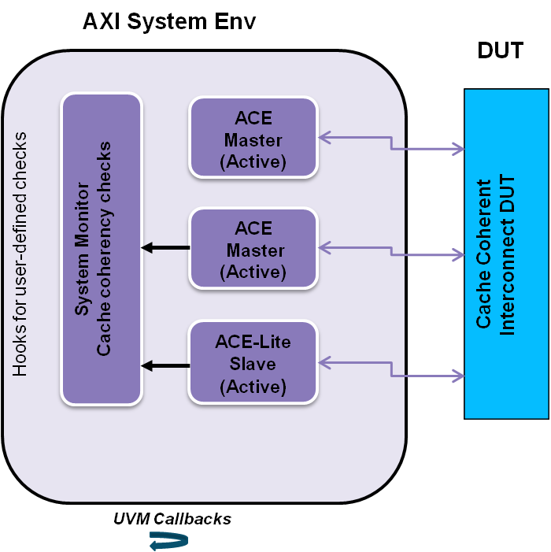

AXI UVM User Guide
:
Verification Topologies
: Interconnect DUT with System Monitor
Interconnect DUT with System Monitor
Figure 9‑9
Interconnect DUT with System Monitor VIP

This site works best with JavaScript enabled